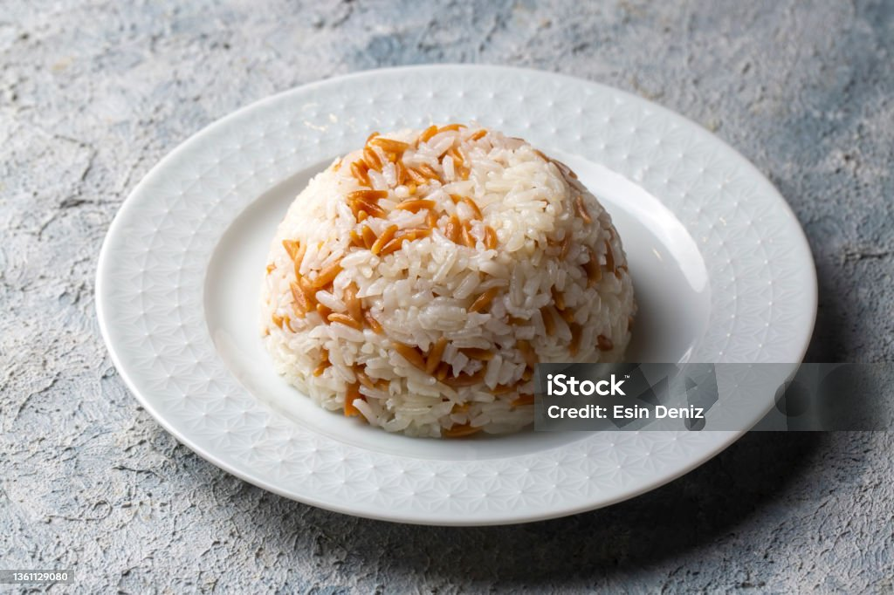

Pilaff Recipe

Description:
Pilav, often referred to as pilaf in English,
is a traditional dish made from rice.
It is prepared by first sautéing rice in oil or
butter until it becomes slightly golden,
then cooking it in a flavorful broth,
often with added ingredients like vegetables,
meat, or spices. The result is a savory,
aromatic rice dish that can be a side or a
main course. Pilav is popular in many cuisines
around the world, including Middle Eastern,
Central Asian, and Mediterranean cultures.
Ingredients:
Steps:
- Rinse the rice
- Heat the fat
- Saute the rice
- Add water
- Boil
- Let it steam
- Fluff and serve